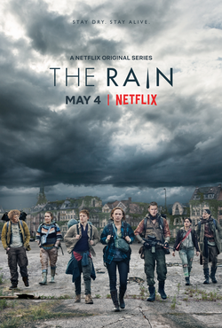

The Rain
Black Mirror
Anne With An E
Pretty Little Liars
Stranger Things

Descrição
Acontece em um mundo pós-apocalíptico em que uma terrível chuva carregada com um vírus misterioso
matou centenas de milhares de pessoas, deixando apenas alguns sobreviventes. Após muitos anos,
o vírus acabou não indo embora e ainda está contaminando o planeta Terra, ameaçando o fim da humanidade.

Descrição
É uma série de televisão britânica antológica de ficção científica
criada por Charlie Brooker e centrada em temas obscuros e satíricos que examinam a sociedade moderna,
particularmente a respeito das consequências imprevistas das novas tecnologias.
Descrição
A história acompanha a vida de Anne Shirley, uma jovem órfã que,
após uma infância de abusos entre orfanatos e casas de estranhos, é enviada
por engano para viver com um casal de irmãos em idade avançada.

Descrição
A história acompanha cinco amigas inseparáveis que têm suas
vidas mudadas para sempre quando uma delas
a líder do grupo, desaparece misteriosamente.

Descrição
Passada na década de 80, na cidade fictícia de Hawkings,
Stranger Things conta a história de um garoto que desaparece e
dos eventos paranormais que se passam em torno desse acontecimento.